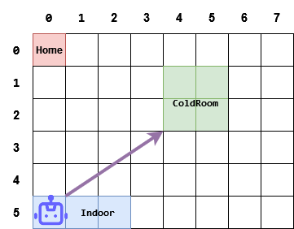
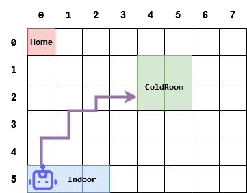
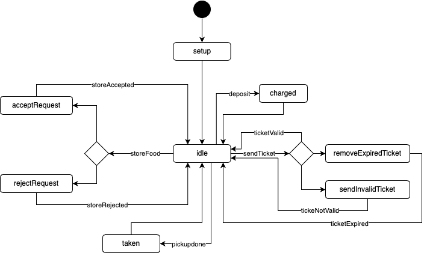
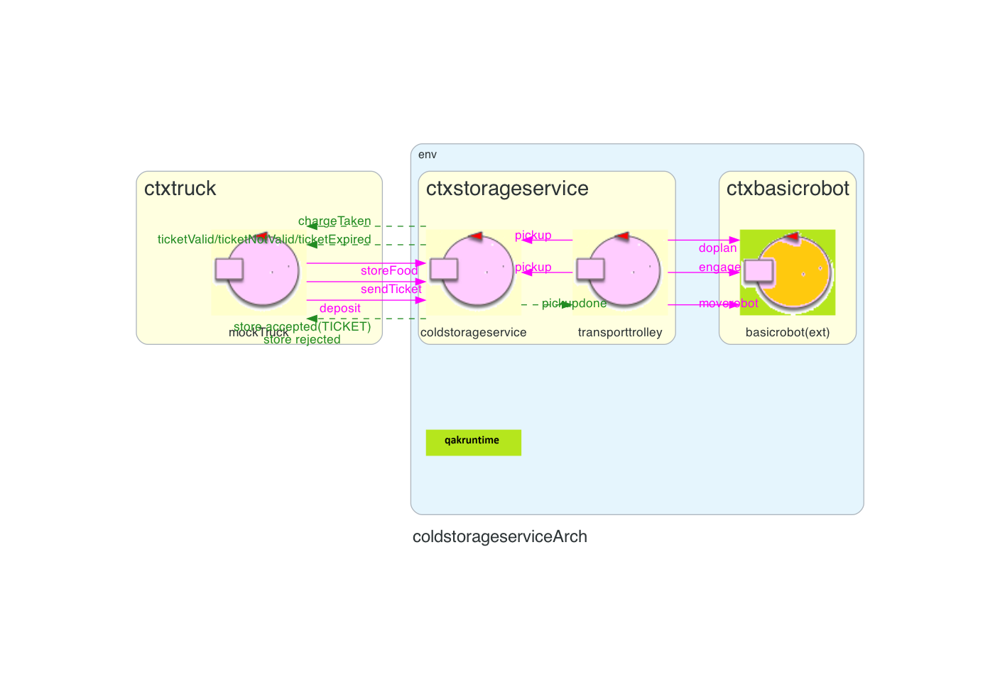
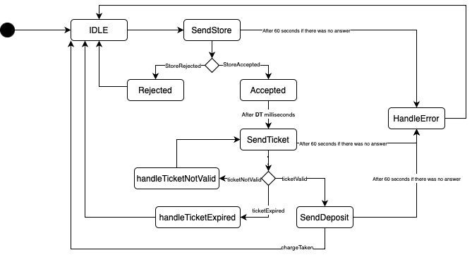
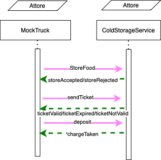
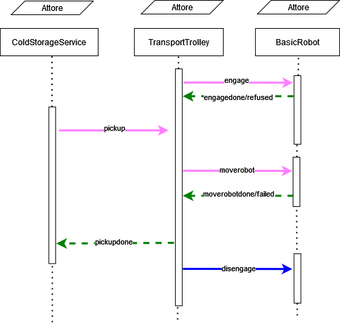
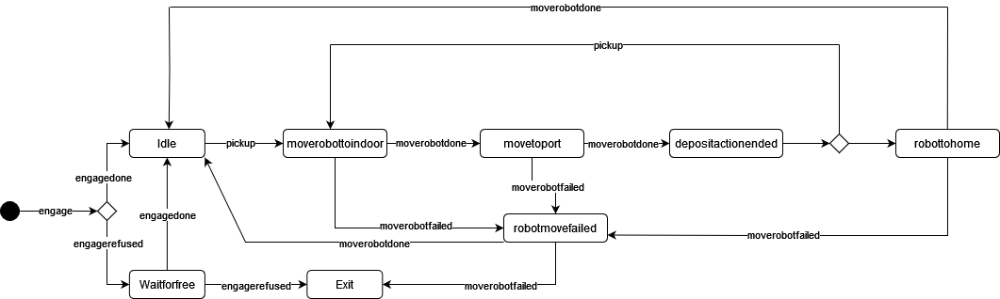

Introduction
Progetto finale di ISS, finalizzato allo sviluppo software di un magazzino refrigerato, nel
quale
vi è un robot che ha il compito di trasportare del cibo da un punto di partenza - chiamato INDOOR - alla cella
frigorifera.
Sprint0
Requirements
Work plan
- A partire dallo sprint0 analizzare il core business dell'applicazione
- Trovare ad analizzare eventuali criticità dei requisiti
- Implementare un simulatore del truck, in modo da simulare un interazione del driver con la ServiceAccessGui, che interagisca con il ColdStorageService
- Implementare il ColdStorageService
- Implementare il TrasportTrolley e interfacciarlo con il BasicRobot
- Testing del sistema
- Aggregare le varie componenti in modo da creare un primo prototipo del sistema
Problem analysis
MockTruck
Obiettivo
Sviluppare un attore che simuli un driver che:- Richieda un Ticket
- Si rechi alla INDOOR
- Presenti il ticket al ColdStorageService e attenda la risposta
Problemi
Analizzando il testo dei requisiti possiamo dedurre i seguenti problemi:- La richiesta del ticket e la presentazione del ticket avvengono in istanti di tempo diversi Dall'esame dei requisiti forniti dal committente emerge che la richiesta di immagazzinamento del carico e la successiva presentazione del ticket all'INDOOR avvengono in momenti distinti.
- Scadenza del ticket Nel caso di accettazione della richiesta, viene fornito al conducente un ticket con un tempo limite entro il quale deve raggiungere l'INDOOR. Sorge quindi il dubbio se il conducente debba essere a conoscenza di tale scadenza.
- Problema del load-time lungo Quando il driver presenta il ticket è possibile che il ColdStorageService non riesca a fornire la risposta chargeTaken in tempi brevi, in quanto il TrasportTrolley potrebbe essere occupato, quindi il driver non saprebbe se la sua richiesta è in attesa di una risposta oppure se il ticket non è stato accettato.
- Errore interno del ColdStorageService Nel caso in cui il ColdStorageService incontri problemi interni che causano il malfunzionamento del servizio, è importante stabilire come il conducente dovrebbe reagire.
- Quando il driver deve liberare la indoor Il driver deve liberare la INDOOR appena "as soon as possible" cioè appena preso il carico, oppure deve aspettare che il carico sia stato scaricato all'interno della ColdRoom
Possibili soluzioni
- La richiesta del ticket e la presentazione del ticket avvengono in istanti di tempo diversi Il tempo in cui il driver si reca alla INDOOR non è trascurabile, di conseguenza è necessario introdurre una variabile DT (driver time) che rappresenta il tempo di viaggio.
- Scadenza del ticket Una possibile soluzione è fornire al conducente la scadenza del ticket e, supponendo che egli abbia una stima del tempo di viaggio verso l'INDOOR, consentirgli di valutare se intraprendere il viaggio. In alternativa, il conducente potrebbe ricevere solo il TICKETID e recarsi comunque all'INDOOR, dove la validità del ticket verrà verificata. Durante questa fase di sviluppo, è stata adottata la seconda opzione, ma ulteriori dettagli dal committente sono necessari.
- Problema del load-time lungo Per sopperire a questo problema è necessario creare un interazione a due fasi: una in cui il driver presenta il proprio ticket (sendTicket) e riceve una risposta da parte del ColdStorageService (ticketAccepted/ticketRejected); e una in cui il driver invia la richiesta di deposito (deposit) e riceve poi chargeTaken
- Errore interno del ColdStorageService È possibile introdurre un timeout per ogni richiesta, in modo che il driver abbandoni alla scadenza del timer. Il timer è stato fissato a 60 secondi.
- Quando il driver deve liberare la indoor In questa fase di sviluppo è stato adottato l'approccio "as soon as possible"
TransportTrolley e BasicRobot
Obiettivo
Sviluppare un attore che implementi il TransportTrolley e le sue interazioni col BasicRobot, in modo che:- Esegua delle
Azioni di deposito , consistente nel: -
Prelevare (
PICKUP ) il carico di cibo dalFood truck arrivato nella posizioneINDOOR -
Andare dalla posizione
INDOOR alla porta dellaCOLDROOM -
Depositare il carico nella
COLDROOM - Sia in grado di mandare comandi al BasicRobot e gestire le eventuali risposte
Connettere/Disconnettere il TransportTrolley ed il BasicRobot
Prima di iniziare le interazioni è presente una fase in cui il TransporTrolley cerca di iniziare la comunicazione col BasicRobot: ciò viene gestito dall'Se tale richiesta va a buon fine può iniziare la comunicazione, altrimenti si genera un messaggio di errore.
Specularmente quando si deve disconnettere il dispositivo l'
Muovere il robot verso una destinazione
Orientamento nell'ambiente
Dai requisiti si evince che le dimensioni della stanza siano note, così come le posizioni dei punti di interesse (È possibile usare uno di questi approcci:
- Usare un sistema di coordinate cartesiane X e Y
- Usare gli elementi strutturali della
Service Area (pareti o ostacoli) come punti di riferimento
L'uso di tali coordinate impone la necessità di scegliere un'unità di misura in modo da mappare opportunamente la Service Area. Per fare ciò si può usare il DDR robot come unità e mappare la Service Area come una griglia composta da celle di dimensione
I luoghi di interesse verranno rappresentati da una coppia di valori (X,Y)
(0,0) inica la cella home
(X,Y) indica la cella che si trova X celle sotto HOME e Y celle alla sua destra
Vantaggi e svantaggi
Tale soluzione si basa sul
Vantaggi e svantaggi
Conclusione
Si consiglia di usare il sistema di coordinate cartesiane, poichè riusabile anche per
Plan finding
Avendo deciso come orientarsi nella stanza e come individuare i punti di interesse, ci possiamo occupare di come comprendere quale percorso si debba scegliere per arrivare in un dato punto di interesse.Anche qui sono possibili vari approcci:
- Muoversi in linea retta
- Muoversi mediante la generazione di un piano

Il problema relativo a tale soluzione è che il DDR robot si muove su se stesso di 90º. Per tale motivo il roboto non riesce a muoversi su una linea a diversa angolazione (non linea retta). Un possibile percorso sarebbe il seguente. 
Per eseguire un percorso diretto si dovrebbe modificare il
Vantaggi e svantaggi
Vantaggi e svantaggi
Conclusione Considerando ciò detto finora, si decide di usare la soluzione che prevede di muoversi mediante una sequenza di mosse perchè consente di usare il software esistente per pianificare ed eseguire il percorso abbattendo i tempi di sviluppo.
Per quanto riguarda il
Gestione delle azioni di deposito e movimento
Si potrebbe decidere di:Attribuire al componente ColdStorageServiceService le responsabilità di:
- Accettare/Rifiutare richieste da parte del MockTruck
- Coordinare le operazioni di carico e scarico, cioè richiedere o comandare al TranportTrolley l'esecuzione di qualche azione
- Muovere il DDR robot verso la destinazione stabilita
- Eseguire le azioni di carico e scarico del materiale
Interazioni
Per quanto riguarda l'interazione tra i componenti possiamo, in prima battuta, affermare che essi interagiscono a scambio di messaggi. L'utilizzo del linguagguioGestione stati
Stato TransportTrolley
In previsione delle fasi successive del progetto, sarebbe opportuno mantenere lo stato del TranportTrolley. In particolare sarebbe necessario tenere traccia della posizione del TranportTrolley e del suo stato (inteso come stato di attività).Dall'analisi dei requisiti è emerso che lo stato del TranportTrolley e la sua posizione nella stanza possono essere rappresentati dai seguenti enumerativi:
enum class CurrStateTrolley { IDLE, STOPPED, MOVING, PICKINGUP, DROPPINGOUT }
Sebbene quanto stabilito in fase di analisi dei requisiti sia corretto, occorre tenere presente che il TranportTrolley potrebbe trovarsi in una posizione diffirente da quelle indicate nell'enumerativoenum class TTPosition { HOME, INDOOR, ONTHEROAD, PORT }
Come nel caso precedente, le soluzioni possibili per mantenere lo stato del TranportTrolley sono diverse.Si decide di adottare la soluzione che prevede di mantenere lo stato in una classe in modo che esso sia accessibile da terze parti, come riportato di seguito:enum class TTPosition { HOME, INDOOR,PORT, ONTHEROAD }
Il codice completo di questa classe è consultabile in TransportTrolleyState.ktenum class CurrStateTrolley { IDLE, STOPPED, MOVING, PICKINGUP, DROPPINGOUT }enum class TTPosition{ HOME, INDOOR, ONTHEROAD, PORT }data class TransportTrolleyState(private var currState : CurrStateTrolley = CurrStateTrolley.IDLE,private var currPosition : TTPosition = TTPosition.HOME ){fun setCurrState(state : CurrStateTrolley) {...}fun setCurrPosition(position : TTPosition) {...}fun getCurrState() : CurrStateTrolley {...}fun getCurrPosition() : TTPosition {...} }
ColdStorageService
Obiettivo
Sviluppare un attore che implementi il ColdStorageService e le sue interazioni col TransportTrolley e BasicRobot, in modo che:- Valuti le richieste di deposito provenienti dal truck
- Coordini le operazioni di carico e scarico del trolley
- Sia in grado di mandare e ricevere comandi al Truck e al TransportTrolley e gestire eventuali risposte
Ticket
Dal tema finale si evince la necessità di gestire i ticket utili per la corretta esecuzione del sistema.Si è quindi pensato di creare una classe che soddisfi il problema.
La classe Ticket è composta da due attributi:
- id: Int
- ticketTime: LocalDateTime
Per verificare se il ticket è valido, viene utilizzato il metodo isExpired() che restituisce un booleano.// Ticket Modelclass Ticket(id: Int, ticketTime: Long) {val id : Intprivate val ticketTime: LocalDateTimeprivate var isExpired: Boolean = false// Costruttoreinit { this.id = id this.ticketTime = LocalDateTime.now().plus(ticketTime,ChronoUnit.SECONDS) } }
Il codice completo di questa classe è consultabile in Ticket.ktfun isExpired(): Boolean { isExpired = LocalDateTime.now() > ticketTime return isExpired }
Gestione dei ticket
Dall'analisi del problema si evince la necessità di gestire le varie casistiche che si possono presentare quando il BasicRobot presenta il ticket per il carico.- Il ticket è valido non scaduto → ColdStorageService restituisce messaggio charge taken
- Il ticket non è valido → ColdStorageService restituisce messaggio di ticket non valido, e il robot può riprovare ad inserire il ticket giusto fin quando non scade il ticket
- Il ticket è valido ma scaduto → ColdStorageService restituisce messaggio di ticket scaduto e l'operazione si intende rifiutata
Singleton
Per quanto riguarda la gestione del ColdStorageService è stato deciso di utilizzare il pattern Singleton in modo da avere un unico attore che gestisce le richieste di deposito e che aggiorna gli attributi interni.Creando un'istanza da una classe con il singleton design pattern ci si assicura che non ne vengano create delle altre. Il singleton rende questa classe accessibile globalmente all'interno del software. Per assicurarsi che l'istanza creata rimanga l'unica, bisogna impedire che l'utente possa crearne di nuove. Il costruttore deve quindi dichiarare il modello "private". In questo modo solamente il codice contenuto nel singleton può istanziare lo stesso singleton. Questo garantisce che l’utente ottenga un solo e unico oggetto, sempre lo stesso. Quando questa istanza viene resa disponibile, non ne vengono create di nuove.
Il codice completo di questa classe è consultabile in TransportTrolleyState.kt// ColdStorageService.ktclass ColdStorageService {private val MAXW : Double = 100.0private val TICKETTIME: Long = 1private var currentWeightStorage : Double = 0.0private val ticketList : ArrayList= arrayListOf() private var ticketNumber: Int = 0;private var rejectedRequestCounter: Int = 0;companion object {private var instance: ColdStorageService? = nullprivate fun getInstance() = instance ?: synchronized(this) { instance ?: ColdStorageService().also { instance = it } } }
Interazioni
Per quanto riguarda l'interazione tra i componenti possiamo, in prima battuta, affermare che essi interagiscono a scambio di messaggi. L'utilizzo del linguagguio QAk ci permette di tipizzare i messaggi in modo tale da avere un controllo maggiore sulle interazioni tra i componenti. Nasce quindi il problema di individuare il tipo di messaggio per ogni interazione:Gestione stati
Nell'analisi dei requisiti è emersa la necessità di mantenere lo stato del ColdStorageService. In particolare occorre tenere traccia del peso attuale del carico e del numero di richieste rifiutate.Nella seguente immagine vengono mostrati gli stati in cui il ColdStorageService può trovarsi.

- Nello stato setup il ColdStorageService esegue tutte le operazioni di inizializzazione, stampa un messaggio e si dirige nello stato idle
- Nello stato idle il ColdStorageService è in attesa di un comando tra
storeFood /sendTicket /pickupdone /deposit dagli altri attori - All'arrivo della richiesta di
storeFood , il ColdStorageService riceve la richiesta di deposito dal truck e valuta se accettarla o rifiutarla secondo la funzione canStore- Se la richiesta viene accettata, il ColdStorageService si dirige nello stato AcceptRequest
- Se la richiesta viene rifiutata, il ColdStorageService si dirige nello stato RejectRequest
// canStore Functionfun canStore(requestWeightToStore: Double): Boolean{ return (requestWeightToStore + getCurrentWeightStorage() <= getMAXW()) } - Nello stato AcceptRequest il ColdStorageService genera il ticket per il truck, incrementa lo stato del ticket number, aggiunge il ticket nella lista dei validi, risponde con
storeAccepted e torna in idle// AcceptRequest StateState acceptRequest{ [# var TICKET : Ticket = Ticket(TICKETNUMBER, TICKETTIME) ColdStorageService.incrementTicketNumber() ColdStorageService.getTicketList().add(TICKET) #] replyTo storeFood with storeAccepted : storeAccepted(TICKETNUMBER) } Goto idle - Nello stato RejectRequest il ColdStorageService incrementa il numero di richieste rifiutate, restituisce la risposta
storeRejected e torna in idle// RejectRequest StateState rejectRequest{ [# ColdStorageService.incrementRejectedRequestCounter() #] replyTo storeFood with storeRejected : storeRejected(_) } Goto idle -
All'arrivo della richiesta di
sendTicket , il ColdStorageService riceve la richiesta di ticket dal BasicRobot e valuta se accettarla o rifiutarla secondo la funzione ticketEvaluation, che richiama la funzione isExpired vista sopra.
La funzione prende in ingresso l'id del ticket e restituisce un booleano che indica se il ticket è valido o meno.-
Se il ticket è presente nella lista dei ticket attivi e non è scaduto, il ColdStorageService rimuove il ticket da quelli validi, risponde con
ticketValid e torna in idle - Se il ticket non è presente nella lista dei validi, il ColdStorageService si dirige verso lo stato sendInvalidTicket
- Se il ticket è presente nella lista dei validi ma è scaduto, il ColdStorageService si dirige verso lo stato sendExpiredTicket
-
Se il ticket è presente nella lista dei ticket attivi e non è scaduto, il ColdStorageService rimuove il ticket da quelli validi, risponde con
- Nello stato sendInvalidTicket, il ColdStorageService stampa il messaggio di errore, risponde con
ticketNotValid e torna in idle - Nello stato removeEpiredTicket, il ColdStorageService aumenta il numero di richieste rifiutate, rimuove il ticket dalla lista degli attivi, risponde con
ticketExpired e torna in idle// removeExpiredTicket StateState removeExpiredTicket { println("Ticket of id ${payloadArg(0)} is expired - Reject Request") color red replyTo sendTicket with ticketExpired : ticketExpired(_) [# val TICKETID = payloadArg(0).toInt() val TICKET = resources.ColdStorageService.getTicketById(TICKETID) resources.ColdStorageService.incrementRejectedRequestCounter() resources.ColdStorageService.getTicketList().remove(TICKET) #] } Goto idle - All'arrivo della richiesta di
deposit , il ColdStorageService si dirige nello stato charged - Nello stato charged, il ColdStorageService invia una richiesta di
pickup al BasicRobot e torna in idle - All'arrivo della richiesta di
pickupdone , il ColdStorageService si dirige nello stato taken - Nello stato taken, il ColdStorageService risponde con
chargeTaken e torna in idle
Back to Home
Dalle Users story si evince che appena la deposit action termina se non ci sono altre richieste
da serivire il TransportTrolley deve tornare nella posizione HOME .
Tale comportamento richiede un'analisi approfondita.
Tale comportamento richiede un'analisi approfondita.
Gestione back to Home
Innanzitutto bisogna comprendere quale componente debba incaricarsi del rientro alla posizione HOME. È stato stabilito, in precedenza, che ilDunque si deve porre in una di queste categorie il requisito
Tale requisito può essere considerato come un movimento del robot, ovvero come un'azione che sposta il DDR Robot dalla posizione attuale fino ad HOME. Visto che il movimento è vincolato al soddisfacimento di un requisito (assenza di ulteriori richieste nel sistema) può essere considerata un'attività che il robot deve svolgere quando si verificano determinate condizioni.
La condizione da verificare è l'assenza di ulteriori richieste nel sistema.
Per tale motivo è stato deciso di sfruttare la capacità di avere una propria coda delle richieste: nel caso in cui non siano più presenti richieste in coda nel
Architettura Logica
Modello ctxcoldstorageservice: sprint1.qak Modello ctxmocktruck: mocktruck.qak

Le risposte ticket Reply e store Reply sono state scritte in quel modo per motivii grafici in realtà rappresentano rispettivamente: ticketAccepted/ticketRejected/ticketNotValid e storeAccepted/storeRejected
Project
MockTruck
Il MockTruck è stato modellato come un Attore Qak. Esso è composto da vari stati, i quali si ripetono ciclicamente per simulare l'interazione di un conducente con la ServiceAccessGUI.I messaggi di risposta del ticket sono stati modificati in ticketValid/ticketNotValid/ticketExpired.
Questo comportamento non implica la presenza di conducenti multipli, ma piuttosto di uno che cerca ciclicamente di effettuare un deposito. Di seguito è riportato il diagramma degli stati e il diagramma delle interazioni con il ColdStorageService.


Gli stati che rappresentano un rifiuto o un errore del sistema (Rejected, HandleError, handleTicketExpired) mostrano messaggi di errore e ritornano all'inizio ciclo.
Lo stato handleTicketNotValid stampa un messaggio di errore e riprova ad inserire di nuovo il ticket.
La transizione tra gli stati Accepted e SendTicket rappresenta il percorso che il conducente deve intraprendere per arrivare all'area INDOOR. Lo stato SendDeposit implementa l'approccio "as soon as possible" descritto nell'analisi del problema: appena il messaggio chargeTaken viene ricevuto, il conducente lascia l'area indoor. Prima di riprendere il ciclo, nello stato IDLE è presente una pausa.
Thread.sleep(Random.nextLong(1, 2001))Sono presenti tre variabili che vengono modificate ad ogni ciclo.
In particolare, le variabili FW e DT vengono inizializzate con valori casuali attraverso una funzione all'interno dello stato IDLE:var FW = 0var DT = 1000Lvar TICKETID = 0
Invece la variabile TICKETID viene assegnata nello stato Accepted, prendendo il valore dalla risposta storeAccepted.fun initDriver(){ FW = Random.nextInt(1, 101) DT = Random.nextLong(1, 2001) }
onMsg (storeAccepted : storeAccepted(TICKETID)){ [# TICKETID = payloadArg(0).toInt() #] }
TransportTrolley Component
IlTransportTrolley
La figura seguente riporta lo schema di interazione dei componenti:
Anche questo componente verrà implementato come una

Nello stato idle il TransportTrolley rimane in attesa di un comando da parte del ColdStorageService.
Nel caso in cui arrivi il messaggio di pickup, si transita nello stato di moverobottoindoor. Da qui in poi si transita in una catena di stati che fungono da base per mandare i messaggi al basicrobot23 in modo da far muovere effettivamente il robot.
Se, per qualsiasi motivo, ci si trovasse nella situazione in cui viene restituito un
Alla fine della sequenza di stati che porta al deposito del carico, ci si ritrova in
QActor transporttrolleycontext ctxcoldstorageservice{State init initial{ ... }Transition t0whenReply engagedone -> idlewhenReply engagerefused -> waitforfreeState waitforfree{ println("$name | already engaged") color green }State idle { ... }Transition t0whenRequest pickup -> moverobottoindoorState moverobottoindoor { ... }Transition t2whenReply moverobotdone -> movetoportwhenReply moverobotfailed -> robotmovefailedState movetoport{ ... }Transition t3whenReply moverobotdone -> depositactionendedwhenReply moverobotfailed -> robotmovefailedState depositactionended{ ... }Transition t4whenTime 3000 -> robottohomewhenRequest pickup -> moverobottoindoor //se arriva un messagio prima di 3s moverobottoindoor altrimenti torno in homeState robottohome{ ... }Transition t5whenReply moverobotdone -> idlewhenReply moverobotfailed -> robotmovefailed //control failed robot movesState robotmovefailed{ println("$name | robot failed to move") color red } }
Testing
MockTruck
Per testare il MockTruck è stata creata la classe che rappresenta lo stato del truck TruckState.kt; all'interno del quale è presente anche un enumerativo che rappresenta i possibili stati che può assumere il mocktruck:Nell'ambito dell'attore Qak, è stata introdotta una nuova variabile denominata truckstate:enum class CurrStateTruck { IDLE, SENDSTORE, REJECTED, ACCEPTED, SENDTICKET, HANDLETICKETEXPIRED, SENDDEPOSIT, HANDLEERROR}
Questa variabile viene aggiornata ogni volta che lo stato del truck cambia, mediante le seguenti operazioni:val truckstate = TruckState()
[#truckstate.setState(CurrStateTruck.CURRENTSTATE)#] updateResource[#truckstate.toJsonString()#]In questo modo un observer può osservare lo stato del mock truck in modo da rendere più semplici i test.
L'attore è stato ulteriormente modificato con l'aggiunta di nuovi Dispatch che consentono alla classe di test di modificare lo stato. Di seguito sono elencati gli stati con le relative transizioni:
Le procedure di test sono implementate all'interno del file TestMockTruckActor.kt. Il metodo @Before si occupa dell'inizializzazione della connessione o, se già inizializzata, invia il messaggio reset al mocktruck. Ciascun test inizia inviando un dispatch che imposta lo stato desiderato del mocktruck, seguito dall'esecuzione delle operazioni di test e dalla verifica dei risultati. Ecco un esempio:Dispatch testStore : testStore(_)Dispatch testTicket : testTicket(_)Dispatch testDeposit : testDeposit(_)Dispatch reset : reset(_)whenMsg testStore -> sendStorewhenMsg testTicket -> sendTicketwhenMsg testDeposit -> sendDepositwhenMsg reset -> idle
@BeforeQuesti metodi di test sono finalizzati a verificare diverse situazioni, ad esempio lo stato "ACCEPTED" dopo un tentativo di memorizzazione (testStoreFoodAccepted), lo stato "REJECTED" dopo un tentativo di memorizzazione non riuscito (testStoreFoodRejected), lo stato "TICKETEXPIRED" dopo l'invio di un biglietto scaduto (testSendTicketExpired), e così via. Ogni test invia i messaggi appropriati, aspetta un breve periodo di tempo per la risposta e quindi verifica lo stato attuale del mock truck. In questo modo, si garantisce che il mock truck si comporti correttamente in diverse circostanze e che gli stati cambino secondo le aspettative.fun before() { if(!setupOk){ //setup }else{println ("TestMockTruckActor | clearHistory and reset") Thread.sleep(2000) conn.forward("msg(reset, dispatch, testunit, mockTruck, reset(_), 1)") obs.clearHistory() } } @Test @Throws(InterruptedException::class)fun testStoreFoodAccepted(){ conn.forward("msg(testStore, dispatch, testunit, mockTruck, testStore(_), 1)")println ("TestMockTruckActor | testStoreFoodAccepted...") try { conn.reply("msg(storeAccepted, reply, testunit, mockTruck, storeAccepted(1), 1)") }catch (e:Exception){ e.printStackTrace() } Thread.sleep(2000)val newState = obs.currentTypedState!!.toString()println (newState) Assert.assertTrue(newState.contains("ACCEPTED")) }
ColdStorageService
Le procedure di test sono implementate all'interno del file TestColdStorageService.kt.Il metodo setUp si occupa dell'inizializzazione della connessione o, se già inizializzata, resetta tutti gli attributi della classe ColdStorageService. Ciascun test inizia inviando una richiesta relativo alla parte da testare e poi analizza la risposta alla richiesta.
In particolare i test che sfruttano i ticket modificano gli attributi della classe ColdStorageService utilizzando i metodi forniti; inoltre il testDeposit simula la risposta del TrasportTrolley. Di seguito è riportato un esempio:
@Beforefun setUp() { if(!setupOk){ //setup }else{ ColdStorageService.resetAll() } }fun testDeposit(){ CommUtils.outmagenta("TestColdStorageService | TestDeposit")val deposit = "msg(deposit, request, testunit, coldstorageservice, deposit(_),1)"var rep="" GlobalScope.launch { try { rep = conn.request(deposit) }catch (e: Exception) { CommUtils.outmagenta("TestColdStorageService | some err in request: $e") } } Thread.sleep(1000)val pickupDone = "msg(pickupdone, reply, trasporttrolley, coldstorageservice, pickupdone(_),1)" //da notare il mittente trasporttrolley try { conn.reply(pickupDone) }catch (e: Exception) { CommUtils.outmagenta("TestColdStorageService | some err in request: $e") } Thread.sleep(1000) assertTrue(rep.contains("chargeTaken")) }
TestTransportTrolley
Le procedure di test sono implementate all'interno del file TestTransportTrolley.kt.Questi sono stati sviluppati per verificare che il
@Test
@Throws(InterruptedException::class)
fun testPick() {
CommUtils.outmagenta("TestTrasportTrolley | testPickup...")
var pickup = "msg(pickup, request, testunit, transporttrolley, pickup(_) ,1)"
var rep = ""
GlobalScope.launch {
try {
rep = connTT.request(pickup)
} catch (e: Exception) {
CommUtils.outmagenta("TestColdStorageService | some err in request: $e")
}
}
var newState = obsTT.getNext()
println(newState.toString())
Assert.assertEquals("INDOOR", newState.getCurrPosition().toString())
Assert.assertEquals("PICKINGUP", newState.getCurrState().toString())
newState = obsTT.getNext()
Assert.assertEquals("ONTHEROAD", newState.getCurrPosition().toString())
Assert.assertEquals("MOVING", newState.getCurrState().toString())
Thread.sleep(7000)
Assert.assertTrue(rep.contains("pickupdone"))
}
@Test
@Throws(InterruptedException::class)
fun testPickQueue() {
CommUtils.outmagenta("TestTrasportTrolley | testPickupQueue...")
val pickup = "msg(pickup, request, testunit, transporttrolley, pickup(_) ,1)"
var rep = ""
GlobalScope.launch {
try {
rep = connTT.request(pickup)
} catch (e: Exception) {
CommUtils.outmagenta("TestColdStorageService | some err in request: $e")
}
}
Thread.sleep(7000)
val pickupQue = "msg(pickup, request, testunit, transporttrolley, pickup(_) ,2)"
var rep1 = ""
GlobalScope.launch {
try {
rep1 = connTT.request(pickupQue)
} catch (e: Exception) {
CommUtils.outmagenta("TestColdStorageService | some err in request: $e")
}
}
var newState = obsTT.getNext()
Assert.assertEquals("INDOOR", newState.getCurrPosition().toString())
Assert.assertEquals("PICKINGUP", newState.getCurrState().toString())
newState = obsTT.getNext()
Assert.assertEquals("ONTHEROAD", newState.getCurrPosition().toString())
Assert.assertEquals("MOVING", newState.getCurrState().toString())
Thread.sleep(7000)
Assert.assertTrue(rep.contains("pickupdone"))
Thread.sleep(7000)
Assert.assertTrue(rep1.contains("pickupdone"))
}
@Test
@Throws(InterruptedException::class)
fun testMoveToHome() {
CommUtils.outmagenta("TestTrasportTrolley | testMoveToIndoor...")
var pickup = "msg(pickup, request, testunit, transporttrolley, pickup(_) ,1)"
var repp = ""
GlobalScope.launch {
try {
repp = connTT.request(pickup)
} catch (e: Exception) {
CommUtils.outmagenta("TestColdStorageService | some err in request: $e")
}
}
Thread.sleep(12000)
var newState = obsTT.getNext()
println(newState.toString())
var move = "msg(moverobot, request, testunit, basicrobot, moverobot(4, 3),1)"
var rep = ""
try {
rep = connRobot.request(move)
} catch (e: Exception) {
CommUtils.outmagenta("TestColdStorageService | some err in request: $e")
}
newState = obsTT.currentTypedState!!
Thread.sleep(5000)
Assert.assertEquals("IDLE",obsTT.currentTypedState!!.getCurrState().toString())
Assert.assertEquals("HOME", obsTT.currentTypedState!!.getCurrPosition().toString())
}
Alla fine di ogni test il robot deve tornare in
@Before
fun setUp() {
if (!setup) {
//setUp
} else {
val goHome = "msg(moverobot, request, testunit, basicrobot, moverobot(0,0) ,1)"
var rep=""
try {
rep = connRobot.request(goHome)
}catch (e: Exception) {
CommUtils.outmagenta("TestTrasportTrolley | some err in request: $e")
}
Thread.sleep(7000)
obsTT.clearHistory()
}
}
Piano di lavoro
Tutti gli sprint sotto intendono delle migliorie e delle eventuali modifiche del lavoro fatto negli sprint precedenti
Sprint 2
Aggiunta specifiche di movimento del transport trolley:- Led
- Controller
- Sonar
Sprint 3
Sviluppo inteerfacce grafiche:- ServiceStatusGui
- ServiceAccessGui
- Creazione del supporto per led fisico
- Deploy del sonar
- Deploy del basic robot
Sprint 4
Deploy sul raspberry:Avviare il sistema
Avvio automatizzato
Scaricare la release da Github, utilizzare lo script adeguato per il proprio sistema:- Linux: startPrototype-linux.sh
- MacOS: startPrototype-mac.sh
- Windows: startPrototype-win.bat
Avvio manuale
-
Avviare il
WebRobot23 In tal modo si avviano il basicrobot23 ed il wenv
cd ColdStorageService-Project/Sprint1/unibo.basicrobot23 docker-compose -f webbasicrobot23.yaml up
-
Avviare il
ColdStorageService ,MockTruck eTrasporttrolley In tal modo si avviano le varie componenti
cd ColdStorageService-Project/Sprint1/unibo.prototipo0 ./gradlew run